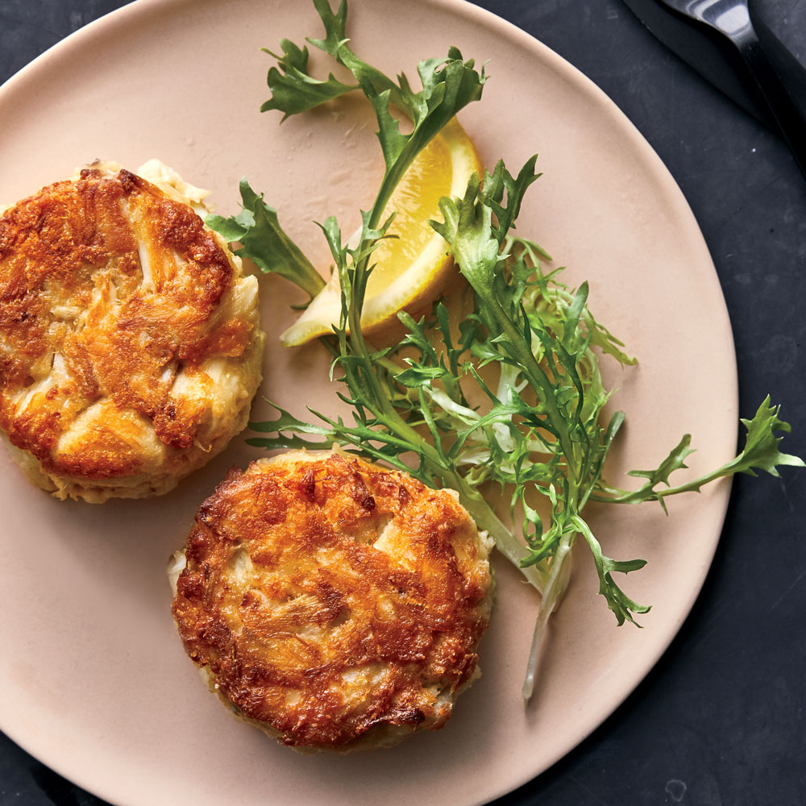

Chicken Fajitas

Description
A crab cake is a variety of fishcake that is popular in the United States. It is composed of crab meat and various other ingredients, such as bread crumbs, mayonnaise, mustard (typically prepared mustard, but sometimes mustard powder), eggs, and seasonings.
Ingredients
- 1/2 cup mayonnaise
- 1 large egg, beaten
- 1 tablespoon Dijon mustard
- 1 tablespoon Worcestershire sauce
- 1/2 teaspoon hot sauce
- 1 pound jumbo lump crab meat, picked over
- 20 saltine crackers, finely crushed
- 1/4 cup canola oil
- Lemon wedges, for serving
Steps
- In a small bowl, whisk the mayonnaise with the egg, mustard, Worcestershire sauce and hot sauce until smooth.
- In a medium bowl, lightly toss the crabmeat with the cracker crumbs. Gently fold in the mayonnaise mixture. Cover and refrigerate for at least 1 hour.
- Scoop the crab mixture into eight 1/3-cup mounds; lightly pack into 8 patties, about 1 1/2 inches thick. In a large skillet, heat the oil until shimmering. Add the crab cakes and cook over moderately high heat until deeply golden and heated through, about 3 minutes per side. Transfer the crab cakes to plates and serve with lemon wedges.